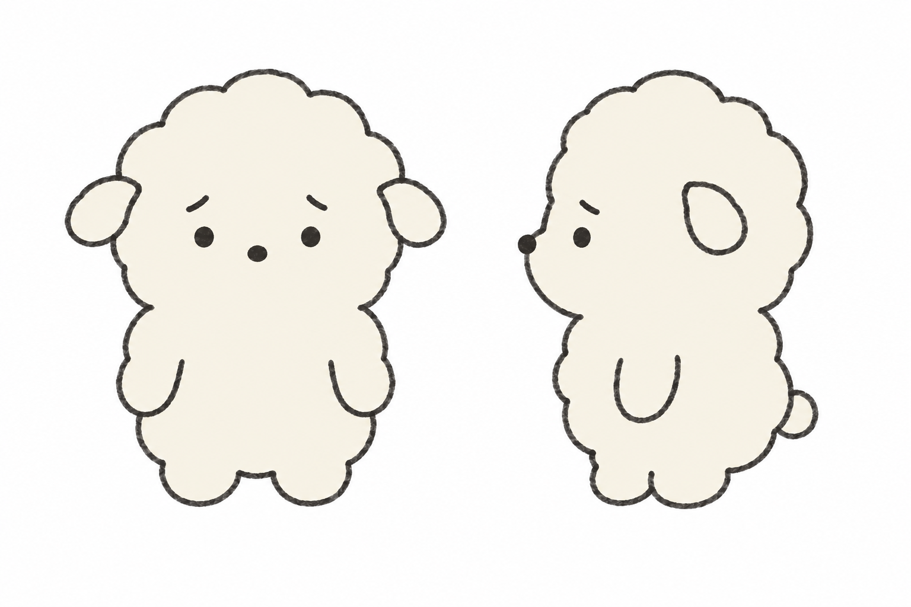

두부 캐릭터 시트 (확정 참조)
gpt-image-2.5-sunburst · high · 1536×1024 · $0.06 · 참조: 선 샘플(아래)만 · 프롬프트: dubu-sheet-prompt.txt

- 선은 가는 연필선(진한 웜그레이, 약한 입자), 흔들림은 경로에. 끊김·얼룩·겹선 금지. 먹구름은 시트에 넣지 않음.
- 1행 턴어라운드: 정면 · 3/4 · 측면 · 뒷모습. 2행: 도망 · 녹아내림 · 점프 · 손 틈 엿보기. 3행: 90도 사과 · 구석 · 까치발 · 통곡.
- 크림 #F6F2E6 단색, 구름형 외곽선, 살짝 처진 작은 귀, 코 점, 입 없음, 블러셔 없음. 기본 얼굴은 점 눈 + 걱정 눈썹 2획(안쪽 올라감) 고정. 눈은 감정에 따라 초롱초롱·>.<·호·대시로 바뀔 수 있음. 자세는 과장·코믹 허용.
- 기본 표정 후보 10안 비교: dubu-face-concepts.html
- 망토 등 소품은 시트에 넣지 않는다 — 에피소드별로 따로 지정.
- 이후 모든 컷 생성 시 이 이미지를 첫 번째 참조로 넣는다.
선 샘플 (시트 생성의 캐릭터 참조)

이전 시트를 참조로 정면·측면만 먼저 뽑아 선 품질을 확정한 뒤, 이 이미지만 캐릭터 참조로 넣어 시트를 생성. 프롬프트: dubu-line-sample-prompt.txt